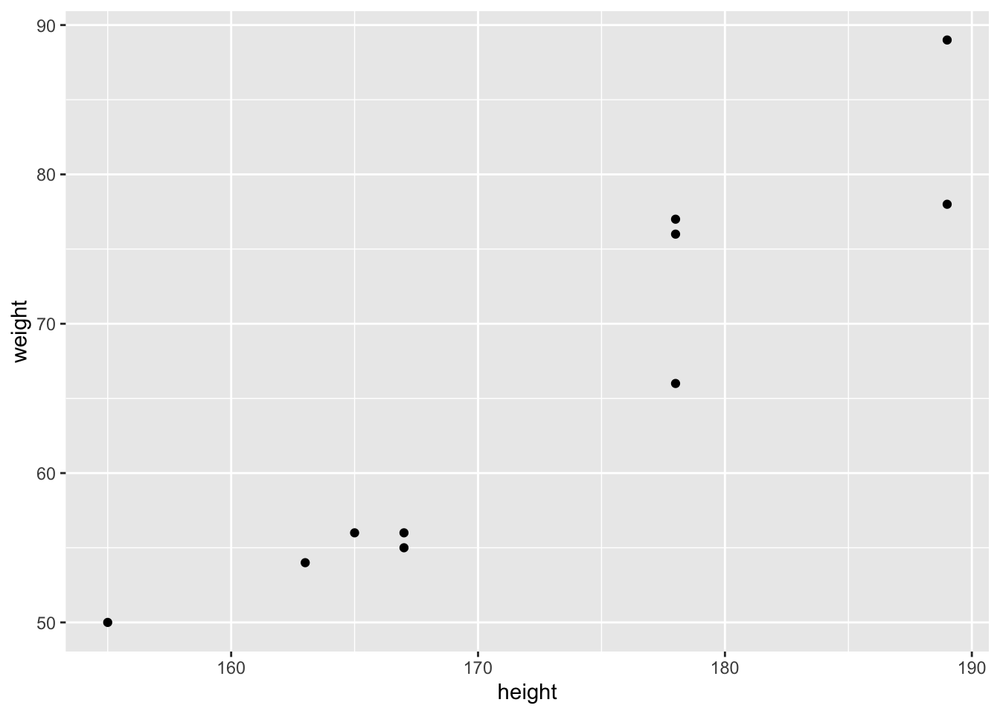
Supervised learning: Regression
This chapter gives a short introduction to simple linear regression (linear modelling with one independent variable), confidence intervals and p-values, multiple linear regression (linear modelling with several independent variables) and interpretation of regression coefficients. Then I show a simple way to use predictions (which will be the focus of next chapter) and then I move more complex models (ridge, lasso and decision trees).
Important to note: In this chapter we will talk mainly about OLS regression. OLS is not directly referred to as a supervised learning model but is a technique used within the broader concept of supervised learning. We will start with simple linear regression (a model with with one dependent and one independent variable) and then move on to a multiple linear regression (a model with one dependent and several independent variables). Then I will introduce modification to the multiple linear model: Ridge model, Lasso and Decision Trees. Bear in mind that getting an understanding of linear regression will help you understand the more complex model introduced in the end of this chapter. Furthermore, note that the focus is on understanding the models intuitively and implementing them in R, rather than understand the models mathematically. For better mathematical learning, go back to the StatsLearning videos.
In short, supervised learning sounds super fancy, but it is actually just regression!
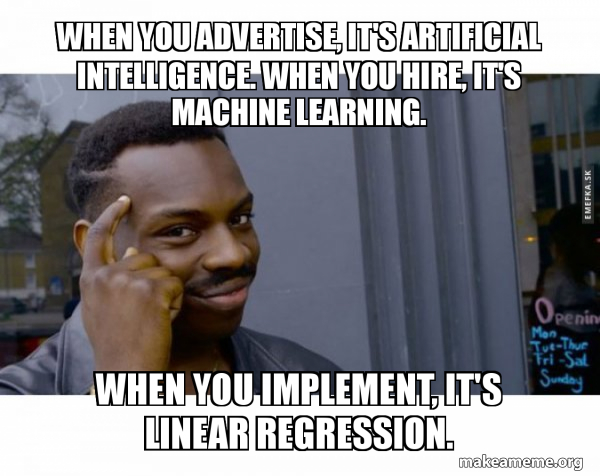
What is supervised learning?
Supervised learning is a category of machine learning algorithms where a model is trained on labeled input data to make predictions or decisions based on that training. In supervised learning, we have a set of input variables (also called features or independent variables) and corresponding output variables (also called labels or dependent variables). The goal is to learn a mapping or relationship between the input variables and the output variables based on the provided labels. Once we have built a model based on independent and dependent variables on observed data used to create the model, we can use this model to predict outside of itself – or predict outcomes for new and unseen data. We usually separate our data into training data and testing data, where we build our model on the training data and test it on the testing data. We will go more in depth into this in the next chapter.
Supervised learning can be further categorized into two main types:
Regression: In regression tasks, the output variable is continuous, and the goal is to predict a numerical value. For example, predicting the price of a house based on its features like area, number of bedrooms, and location. Linear regression and decision trees are common regression algorithms used in supervised learning. (The focus of this chapter).
Classification: In classification tasks, the output variable is categorical or discrete, and the goal is to assign a class or category to each input sample. For example, classifying emails as spam or not spam based on their content and attributes. Logistic regression, support vector machines (SVM), and random forests are popular classification algorithms. (The focus of next chapter).
Before we dive in to the more complicated models, we start with linear regression and multiple linear regression.
Simple linear regression
In a nutshell
Ordinary Least Square (OLS) regression is a statistical technique used to analyze the relationship between a dependent variable and one or more independent variables. It aims to find the best-fitting line that represents the relationship between these variables. Intuitively, OLS regression tries to minimize the vertical distance between the observed data points and the predicted values on the line.
To illustrate this, imagine you have a scatterplot of points representing the heights (cm) and weights (kg) of a group of people. The dependent variable (y-axis) would be the weights, and the independent variable (x-axis) would be the heights. This is what we observe in the figure below: Where we are observing the weight and height of ten imaginary people.
With OLS regression we are interested in finding the (straight) line that best represents the relationship between height and weight. This is because the OLS regression assumes the relationship between two variables are a straight line. OLS regression finds the the line that is best able to describe the relationship between the observed values and fit them to line by minimizing the sum of the squared differences between the actual weights and the predicted weights on the line.
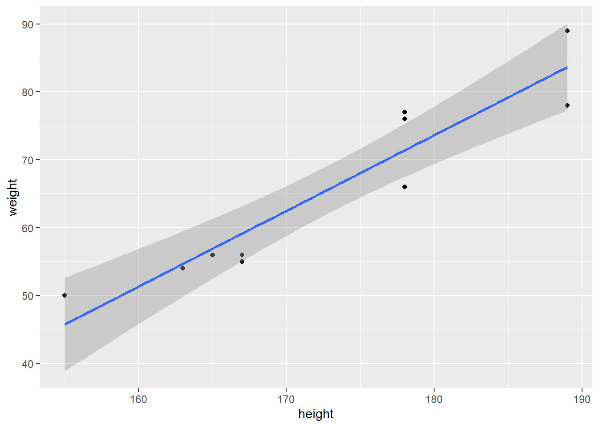
In short, OLS regression finds the line that minimizes the distance from the observed values (the black dots) to the blue line, to give the best and as accurate description of the relationship between height and weight as observed in data (the black dots).
The detailed version
Simple linear regression is a statistical technique used to analyze the relationship between two continuous variables. It aims to understand how changes in one variable, called the independent variable or predictor, are associated with changes in another variable, known as the dependent variable or response. Simple linear regression assumes a linear relationship between the variables, meaning that the relationship can be represented by a straight line.
Let’s go through the main components and steps involved in simple linear regression:
Variables: In simple linear regression, you have two variables: the dependent variable (Y) and the independent variable (X). The goal is to examine how changes in X affect Y.
Scatterplot: The first step is to create a scatterplot, where each data point represents the values of X and Y. The scatterplot allows you to visualize the data and get an initial understanding of the relationship between the variables (as illustrated in the example above).
Line of Best Fit: Simple linear regression finds the line that best represents the relationship between X and Y. This line is called the line of best fit or regression line. It is determined by minimizing the sum of the squared differences between the observed Y values and the predicted Y values on the line (as illustrated in the example above).
Equation of the Line: The equation of the line can be represented as
\[\begin{equation} Y_i = \beta_0 + \beta_1 X_i + \epsilon_i \end{equation}\]
where \(\beta_0\) is the y-intercept (the value of \(Y\) when \(X\) is zero), \(\beta_1X_i\) and is the slope (the change in \(Y\) for each unit change in \(X\)). \(\epsilon_i\) represents the error term (residuals).
Coefficient Estimation: The coefficients \(\beta_0\) and \(\beta_1X_i\) need to be estimated based on the data. The most common method for estimation is called Ordinary Least Squares (OLS), which minimizes the sum of the squared differences between the observed \(Y\) values and the predicted \(Y\) values on the line (as illustrated in the example above).
Coefficient Interpretation: The estimated coefficients provide insights into the relationship between the variables. The slope \(\beta_1\) indicates the average change in \(Y\) associated with a one-unit change in \(X\). The y-intercept \(\beta_0\) represents the predicted value of \(Y\) when \(X\) is zero.
Goodness of Fit: It is important to assess the quality of the linear regression model. Common metrics include the coefficient of determination (R-squared), which represents the proportion of the total variation in the dependent variable explained by the independent variable, and the residual standard error, which measures the average distance between the observed \(Y\) values and the predicted \(\hat{Y}\) values. In other words the R-squared tells us how much of Y can be explained by changes in X.
Residual Analysis: Residuals are the differences between the observed \(Y\) values and the predicted \(\hat{Y}\) values on the regression line. Analyzing the residuals helps assess the model’s assumptions, such as linearity, independence, and homoscedasticity (constant variance).
Prediction and Inference: Once the regression model is fitted, it can be used for prediction by plugging in new values of \(X\) to obtain predicted values of \(Y\). In other words, we can use the the model on heights and weights to predict the weight of someone with a particular weight. The prediction will be based on the observed dots and the relationship between height and weight described by OLS regression – or if you will, the line. Additionally, hypothesis tests and confidence intervals can be performed to make inferences about the relationship between the variables and the population parameters.
Simple linear regression is a powerful tool for understanding and quantifying the relationship between two continuous variables. It provides insights into how changes in the independent variable are associated with changes in the dependent variable, allowing for predictions and making inferences about the population.
The “simple” OLS regression in R
In R, we can make a simple linear model using the following code:
mod <- lm(weight ~ height,
data = data)Here we use the code lm() to create a linear model. Inside the code we first have to choose our dependent variable or our \(Y\), followed by a tilde ~, after the tilde we place our independent variable, followed by the dataset in which we take these variables from. The dataset that contains the variables weight and height is called data. And just for clarification, I am saving the results from the linear model in an object called mod.
Interpreting the results
===============================================
Dependent variable:
---------------------------
weight
-----------------------------------------------
height 1.115***
(0.143)
Constant -127.069***
(24.827)
-----------------------------------------------
Observations 10
R2 0.883
Adjusted R2 0.869
Residual Std. Error 4.854 (df = 8)
F Statistic 60.520*** (df = 1; 8)
===============================================
Note: *p<0.1; **p<0.05; ***p<0.01The estimated coefficients provide insights into the relationship between the variables. The slope \(\beta_1\) indicates the average change in \(Y\) (weight) associated with a one-unit change in \(X\) (height). Substantially this means that with an increase in heigh of 1cm the model predicts a 1.1 kg increase in weight. The y-intercept \(\beta_0\) (constant in the table) represents the predicted value of \(Y\) when \(X\) is zero. Here we see that the constant is negative and perhaps does not have a clear substantive meaning given that a person can never be 0 cm but still weigh 10 kg.
Confidence intervals
Confidence intervals estimates the range within which the regression coefficient, is likely to fall. The interval is constructed based on the sample data and is associated with a specified level of confidence, typically expressed as a percentage (e.g., 95% confidence interval).
Here’s how a confidence interval is interpreted:
Point Estimate: The first calculate a point estimate. This is what we did when we made our
lm()model. Here we got a regression coefficient which is a population parameter a predicted value of \(Y\) based on our sample.Standard Error : The confidence interval takes into account the variability of the sample data and provides a margin of error around the point estimate. The standard error reflects the uncertainty associated with estimating the parameter from a sample rather than the entire population. So in our case, we only have 10 observations, they represent a sample of the entire population, and based on those 10 observations our model measures the correlation between height and weight. The standard error to the parameter is in brackets in our table, below the coefficient estimate.
Range of Values: The confidence interval is constructed by defining a lower and upper bound around the point estimate (coefficient). The range of values represents the plausible values for the population parameter. The width of the interval is influenced by the variability in the data and the chosen level of confidence.
Formula: We can compute the confidence interval based on the point estimate, or the coefficient and the standard error. This is the formula:
\(\hat{\beta}1\pm 2*SE\hat{(\beta)}\)
Where SE is the standard error. In our case, we can calculate the the confidence intervals of our coefficient from the above table:
Upper-bound \(=+\)
1.115 + 2*0.143[1] 1.401Lower-bound \(=-\)
1.115 - 2*0.143[1] 0.829Here the we see that the range of the coefficient, or point estimate is \([0.829, 1.401]\).
Confidence Level: The confidence level represents the probability that the interval contains the true population parameter. For example, a 95% confidence interval means that if we were to repeat the sampling process many times and construct intervals in the same way, about 95% of those intervals would contain the true population parameter.
Interpretation: The confidence interval is typically expressed as “point estimate ± margin of error” or as a range, such as “[lower bound, upper bound].” It provides a range of plausible values for the population parameter and allows for inference about the population based on the sample data. In our example
The wider the confidence interval, the less precise the estimate, indicating greater uncertainty. Conversely, a narrower interval indicates a more precise estimate with lower uncertainty.
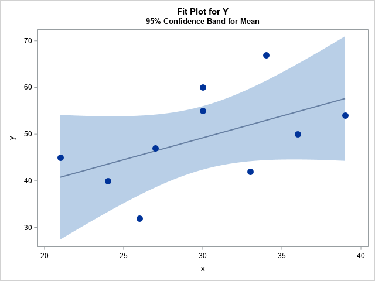
So in this figure, we see a regression line with large confidence intervals indicating greater uncertainty about the predicted values from the regression model. Comparatively look at the confidence interval in our model of height and weight:
Confidence intervals are valuable because they provide a range of values that captures the plausible values of the population parameter. They help assess the precision of estimates and enable researchers and decision-makers to make informed conclusions and judgments based on statistical analysis.
Gazing at the stars ***
How confident are we about our results? Or how uncertain are we that we right?
In a regression table, p-values provide a measure of statistical significance for the coefficients estimated in the regression model. They help assess whether the estimated coefficients are statistically different from zero, indicating whether the corresponding independent variables have a significant impact on the dependent variable.
In hypothesis testing, the null hypothesis assumes that there is no relationship between the independent variable and the dependent variable, meaning the coefficient is zero. The alternative hypothesis, on the other hand, suggests that there is a significant relationship, and the coefficient is not zero.
The p-value associated with each coefficient in the regression table quantifies the probability of observing a coefficient as extreme as, or more extreme than, the one estimated in the model, assuming the null hypothesis is true. In other words, it represents the probability of obtaining the estimated coefficient purely by chance, without any true relationship between the variables.
Typically, a p-value below a chosen significance level (commonly 0.05 or 0.01) is considered statistically significant. If the p-value is less than the chosen significance level, it suggests that the coefficient is significantly different from zero, providing evidence to reject the null hypothesis in favor of the alternative hypothesis. On the other hand, if the p-value is greater than the significance level, it suggests that there is not enough evidence to reject the null hypothesis, and the coefficient is not considered statistically significant.
Interpreting p-values is important for understanding the statistical significance of the estimated coefficients in the regression model. It helps determine which independent variables have a significant impact on the dependent variable and can guide decision-making or further analysis based on the results. However, it is important to note that statistical significance does not necessarily imply practical significance, and the interpretation of the coefficients should also consider the context and subject matter knowledge.
Multiple Linear Regression
Multiple linear regression is an extension of simple linear regression that allows us to analyze the relationship between a dependent variable and multiple independent variables simultaneously. It aims to understand how changes in several independent variables are associated with changes in the dependent variable.
Multiple linear regression is thus an extension, where we add several independent variables into the equation, so that it looks like this:
\[\begin{equation} Y_i = \beta_0 + \beta_1 X_i + \beta_2 X_i + \beta_3 X_i + \beta_4 X_i + \beta_5 X_i + \epsilon_i \end{equation}\]
So we have one independent variable \(Y\) and two or more independent variables. The goal is to examine how changes in the independent variables collectively affect the dependent variable.
I will use the dataset gapminder to explain the model in R. The Gapminder dataset contains information about various countries over different years, including variables like year, population “pop”, GDP per capita “gdpPercap”, and life expectancy “lifeExp”.
We load the dataset gapminder in R – we have to install it first, then library, then data(gapminder).
In R it looks the same as the model we estimated above:
mod1 <- lm(lifeExp ~ year + pop+ gdpPercap, data = data)The only difference is that we now put \(+\) after height and add another variable. Let’s look at the results:
stargazer(mod1, type = "text")
===============================================
Dependent variable:
---------------------------
lifeExp
-----------------------------------------------
year 0.235***
(0.014)
pop 0.000***
(0.000)
gdpPercap 0.001***
(0.00002)
Constant -411.450***
(27.666)
-----------------------------------------------
Observations 1,704
R2 0.440
Adjusted R2 0.439
Residual Std. Error 9.673 (df = 1700)
F Statistic 445.560*** (df = 3; 1700)
===============================================
Note: *p<0.1; **p<0.05; ***p<0.01We now have a table with two variables and the constant. In multiple linear regression – as above, the coefficients represent the average change in the dependent variable \(Y\) associated with a one unit change in the corresponding independent variable, holding all other independent variables constant. The variables provide insights into the direction and magnitude of the relationship between the variables. In multiple regression, we look at the effect of one variable at the time, keeping the other variables at a constant. Important: always when interpreting the variables, be sure to always know at what scale the different variables are estimated. Here we are dealing with height in cm, weight in kg and gender as a binary indicator.
In our table, we see that all variables are statistically significant at the 1% level.
Same as in the above example the coefficients in multiple linear regression are estimated using a method called Ordinary Least Squares (OLS), which minimizes the sum of the squared differences between the observed Y values and the predicted Y values based on the independent variables.
The quality of the multiple linear regression model can be assessed using various metrics, including the coefficient of determination (R-squared), adjusted R-squared. This metric evaluate how much variation in the dependent variable is explained by the independent variables. In the table you can see the R-squared, telling us that approximately 44 percent of the variation of life expectancy is explained by the two independent variables.
Over to the interpretation of the results, we can see that:
When one year has passed, the life expectancy for an individual increases with 0.2 years. (This does not make that much sense substantially, it just means that since we are controlling for the year the life expectancy was measured, we can see that as we come closer to “our time” – data starts in 1952 – life expectancy increases.) Pop is not a positive or a negative predictor of life expectancy, suggesting it does not either increase or decrease life expectancy. When gdp per capita increases with one dollar life expectancy increases with 0.001 years.
Assumptions of linear regression
Linearity: The relationship between the independent variables and the dependent variable is linear. This means that as the independent variables change, the dependent variable changes in a consistent and proportional manner. If the relationship is not linear, the model may not accurately capture the underlying patterns.
Independence of Residuals: The residuals, which are the differences between the observed and predicted values, are independent of each other. This assumption implies that there is no systematic pattern or correlation in the residuals. In other words, the error in predicting one observation is unrelated to the error in predicting any other observation.
Homoscedasticity: The residuals have constant variance (or spread) across all levels of the independent variables. Homoscedasticity suggests that the model’s prediction errors do not change systematically as the values of the independent variables change. It implies that the spread of residuals is consistent, indicating that the model is equally reliable in different parts of the data.
Normality of Residuals: The residuals follow a normal distribution. This assumption means that the errors in the predictions are normally distributed with a mean of zero. Normality is important because it allows for the application of statistical inference and hypothesis testing.
No Multicollinearity: The independent variables are not highly correlated with each other. Multicollinearity occurs when two or more independent variables are strongly correlated, which can cause issues in estimating the individual effects of the variables. Ideally, the independent variables should be moderately correlated with the dependent variable but minimally correlated with each other.
Assessing the assumptions of linear regression in R
- Linearity: The code creates scatter plots for each independent variable “year”, “pop”, “gdpPercap”against the dependent variable “lifeExp”. It uses the
ggplot()to create the plots. Thegeom_point()function adds the data points, and thegeom_smooth()function fits a linear regression line to the data points. Thelabs()function sets the x-axis and y-axis labels, and theggtitle()function sets the plot title – but you are all familiar with how to plot by now? The scatter plots help visualize the relationship between each independent variable and the dependent variable. If the scatter points align closely along the fitted line, it suggests a linear relationship between the variables. Deviations from linearity may indicate non-linear relationships or the need for transformations.
ggplot(data, aes(x = year, y = lifeExp)) +
geom_point() +
geom_smooth(method = "lm", se = FALSE) +
labs(x = "Year", y = "Life Expectancy") +
ggtitle("Linearity Check: Life Expectancy vs. Year")
ggplot(data, aes(x = pop, y = lifeExp)) +
geom_point() +
geom_smooth(method = "lm", se = FALSE) +
labs(x = "Population", y = "Life Expectancy") +
ggtitle("Linearity Check: Life Expectancy vs. Population")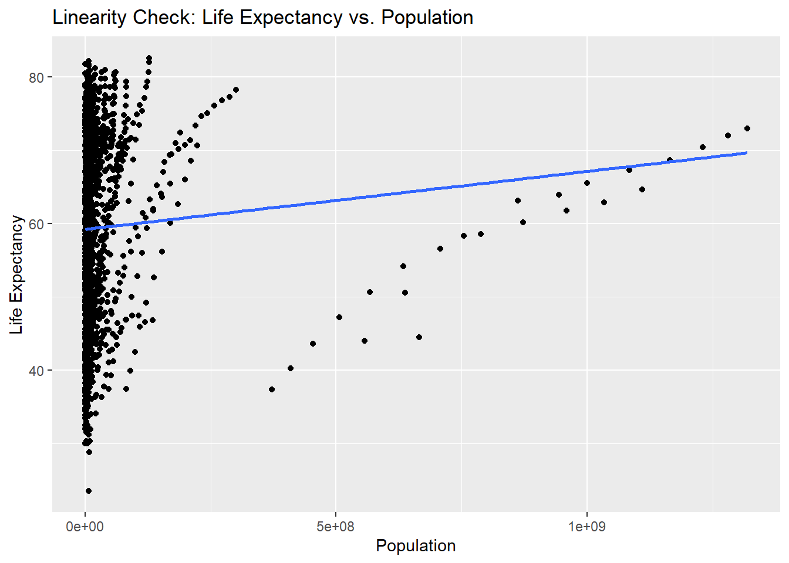
ggplot(data, aes(x = gdpPercap, y = lifeExp)) +
geom_point() +
geom_smooth(method = "lm", se = FALSE) +
labs(x = "GDP per Capita", y = "Life Expectancy") +
ggtitle("Linearity Check: Life Expectancy vs. GDP per Capita")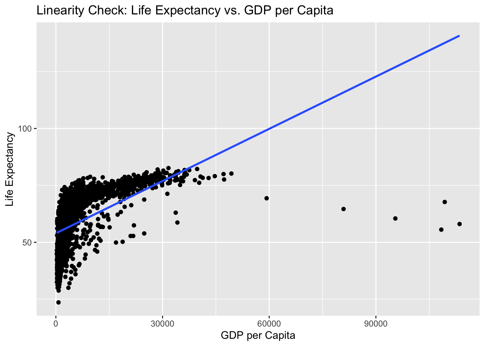
- Independence of residuals: The code creates a scatter plot of the residuals versus the fitted values (predicted values). It uses the
geom_point()function to add the data points and thegeom_hline()function to draw a dashed horizontal line at \(y = 0\). The scatter plot helps assess the assumption of independence between the residuals and the fitted values. If the points are randomly scattered around the horizontal line at \(y = 0\), it suggests that the residuals are independent of the fitted values, indicating no systematic patterns or correlations.
residuals <- residuals(mod1)
fitted_values <- fitted(mod1)
ggplot() +
geom_point(aes(x = fitted_values, y = residuals)) +
geom_hline(yintercept = 0, linetype = "dashed") +
labs(x = "Fitted Values", y = "Residuals") +
ggtitle("Independence of Residuals")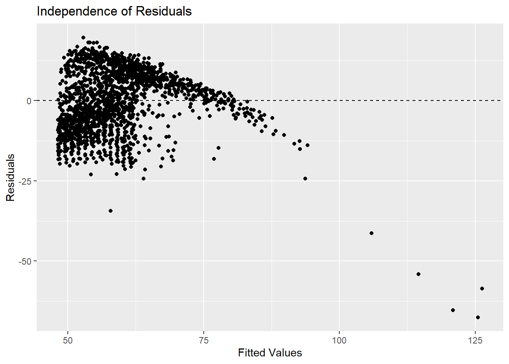
- Homoscedasticity: The code creates a scatter plot of the residuals divided by the square root of the fitted values versus the fitted values (predicted values). The scatter plot helps assess the assumption of homoscedasticity, which means the residuals have constant variance across different levels of the fitted values. If the points are evenly spread around the horizontal line at y = 0, it suggests homoscedasticity. Any funnel-like shape or widening/narrowing of the scatter points with respect to the fitted values may indicate heteroscedasticity.
ggplot() +
geom_point(aes(x = fitted_values, y = residuals/abs(sqrt(fitted_values)))) +
geom_hline(yintercept = 0, linetype = "dashed") +
labs(x = "Fitted Values", y = "Residuals / sqrt(Fitted Values)") +
ggtitle("Homoscedasticity Check: Residuals vs. Fitted Values")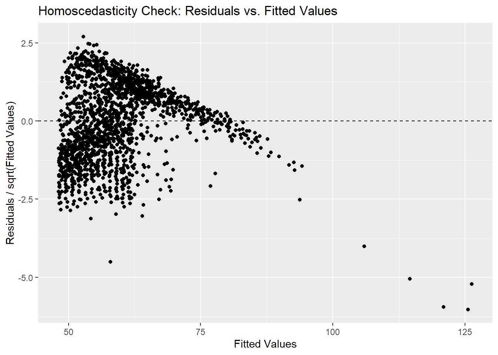
- Normalicy of residuals: The code creates a Q-Q plot (quantile-quantile plot) of the residuals using the
qqnorm()function. The Q-Q plot compares the distribution of the residuals against a theoretical normal distribution. The Q-Q plot helps assess the assumption of normality of the residuals. If the points in the plot align closely with the diagonal reference line, it suggests that the residuals are approximately normally distributed. Departures from the line indicate deviations from normality.
qqnorm(residuals)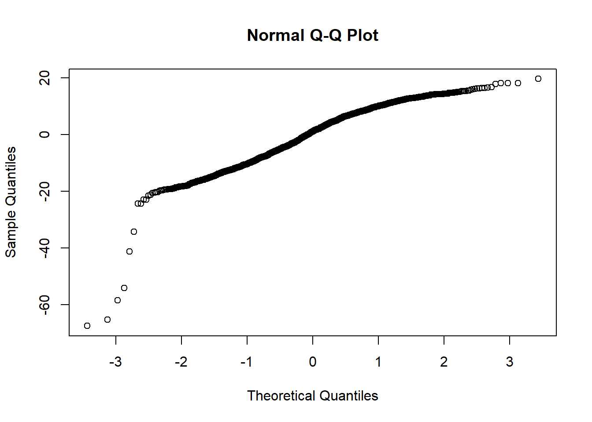
- Multicolinearity: The code calculates the variance inflation factors (VIF) using the
vif()function from thecarpackage. VIF measures the degree of multicollinearity between independent variables. VIF values greater than 1 suggest some degree of multicollinearity. Higher VIF values indicate stronger multicollinearity, which means the independent variables are highly correlated. In such cases, it may be necessary to address multicollinearity by removing or transforming variables or using techniques like ridge regression.
# install.packages("car")
library(car)vif(mod1) year pop gdpPercap
1.063202 1.008924 1.056692 Overall fit of the model?
In order to evaluate our model we have to calculate the Root Mean Squared Error(RMSE). The RMSE represents the average magnitude of the residuals in the original units of the dependent variable. It provides an estimate of the typical amount of error or variability in the model’s predictions. A lower RMSE indicates that the model’s predictions are closer to the actual observed values. It suggests that the model has a better overall fit to the data and is capable of making more accurate predictions. In other words, a low RMSE indicates that the model has less average prediction error and is better at capturing the underlying patterns in the data. We will use the RMSE from this model and compare it to the RMSE we get in the next models we create in order to evaluate our model, along with R squared (explained variance).
First we have to calculate the Sum of Squared Residuals (SSR). We start with obtaining the residuals from the model we estimated above using residuals().
# Obtaining the residuals
residuals <- residuals(mod1)Then calculating the Root Mean Squared Error (RMSE) using the sqare-root function in r sqrt()then the mean()and then putting in the residuals-object from above in the second. I save in an object called “rmse”. Again, the lower RMSE the better.
rmse <- sqrt(mean(residuals^2))
rmse[1] 9.661907This calculation is not too complicated and this is the one we need to remember in order to compare across different models selections. Which of our models fit the data best and makes the best predictions?
The RMSE and the R-squared is usually used to say something about the overall modell, where we want a high R-squared suggesting that the independent variables explain a lot of the variation in Y. For the RMSE, a low number is the best, suggesting that th model’s prediction are closer to the actual observed values.
Building on the OLS regression: Solving the bias-variance tradeoff?
The bias-variance tradeoff is a fundamental concept in machine learning that relates to the tradeoff between the model’s ability to capture the true underlying pattern in the data (low bias) and its sensitivity to fluctuations and noise in the data (variance).
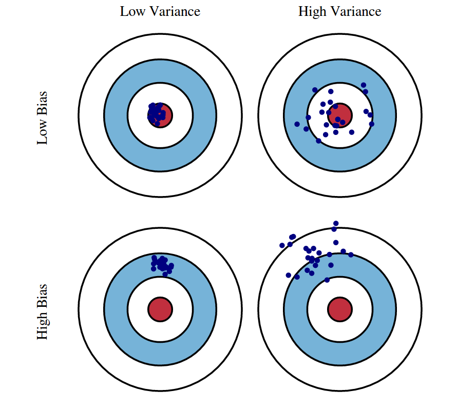
Imagine you have a target to hit with a bow and arrow. You have two attempts: one with a target in the shape of a large circle and another with a target in the shape of a small bullseye. Let’s consider two scenarios:
Low Bias, High Variance: In the first scenario, you use the large circle target. You shoot several arrows, and they spread randomly across the target. While the average position of the arrows may be close to the center of the target (low bias), the individual shots are scattered and far from each other (high variance). This indicates high sensitivity to small changes, such as your aiming position or a gust of wind. In this case, your shots have low bias but high variance.
High Bias, Low Variance: In the second scenario, you use the small bullseye target. You shoot several arrows, and they cluster tightly around a point, but that point is not at the center of the target (high bias). While your shots may be consistently grouped together (low variance), they are consistently off-target (high bias). This suggests that your shots are biased towards a particular spot but have low sensitivity to small changes. In this case, your shots have high bias but low variance.
In machine learning, bias refers to the error introduced by approximating a real-world problem with a simplified model. A model with low bias can capture the true underlying pattern in the data more accurately. In our analogy, low bias corresponds to hitting the center of the target.
Variance, in machine learning, refers to the model’s sensitivity to fluctuations and noise in the data. A model with high variance is highly sensitive to the specific training data and may not generalize well to new, unseen data. In our analogy, high variance corresponds to the arrows being scattered and far from each other.
The bias-variance tradeoff occurs because reducing one source of error (bias) often increases the other (variance), and vice versa. Ideally, we want to strike a balance between bias and variance to achieve good model performance. The goal is to find a model that can capture the underlying patterns in the data (low bias) while being robust to variations and noise (low variance).
In practice, different algorithms and techniques, such as regularization methods and model selection, can be employed to find the right balance between bias and variance. We will look at three different models that may help us find the perfect balance between bias and variance.
Ridge regression
Ridge regression is a variant of linear regression that is used to deal with the problems of multicollinearity (high correlation between independent variables) and overfitting. It adds a penalty term to the ordinary least squares (OLS) regression, which helps to stabilize the model and reduce the impact of multicollinearity.
Multicollinearity: Multicollinearity refers to a situation in which two or more independent variables in a regression model are highly correlated with each other. It indicates a strong linear relationship between the predictors, which can cause issues in the regression analysis. High correlation makes it difficult for the regression model to separate and identify the unique contribution of each variable. It impacts the coefficient interpretation, makes it harder to detect significant relationships between the dependent and independent variables and creates misleading variable importance.
Overfitting: Overfitting occurs when a statistical model fits the training data too closely, capturing noise or random fluctuations rather than the true underlying relationships. It happens when a model becomes overly complex and starts to memorize the training data instead of learning the general patterns. An overfit model tends to have high variance, meaning it is sensitive to small fluctuations in the training data. It fits the training data extremely well but fails to generalize to new, unseen data. Overfitting can result in poor performance on unseen data because the model has learned the idiosyncrasies and noise specific to the training dataset. It fails to capture the underlying trends and patterns that hold true in the broader population.
The ridge model explained
In OLS regression, the goal is to find the best-fitting line that minimizes the sum of squared differences between the observed values and the predicted values. However, in the presence of multicollinearity, the estimates of the regression coefficients can become unstable and highly sensitive to small changes in the data.
Ridge Regression: Ridge regression addresses the problem of multicollinearity by adding a penalty term to the OLS regression equation. This penalty term, also known as a regularization term, is based on the sum of squared values of the regression coefficients multiplied by a tuning parameter called lambda (λ). The ridge regression equation can be written as:
RSS + λ * Σ(β²)
Here, RSS represents the residual sum of squares, Σ(β²) represents the sum of squared coefficients, and λ controls the amount of shrinkage applied to the coefficients.
Shrinkage of Coefficients: The λ parameter controls the trade-off between model simplicity and accuracy. As λ increases, the ridge regression model puts more emphasis on shrinking the coefficients towards zero. This shrinkage helps to reduce the impact of multicollinearity, as it pushes the coefficients towards more reasonable values and prevents over-reliance on a single variable.
Bias-Variance Trade-off: Ridge regression introduces a small amount of bias (bias refers to the error introduced by approximating a real-world problem with a simplified model) to reduce the variance (variance refers to the model’s sensitivity to changes in the training data). This bias-variance trade-off can lead to better predictive performance on new, unseen data, especially when the training dataset is limited or when there are highly correlated variables.
Selection of λ: The choice of the optimal value for λ is crucial in ridge regression. It is typically determined using techniques such as cross-validation, where different values of λ are tested, and the one that provides the best balance between model complexity and performance on unseen data is selected.
Ridge regression is a popular technique in situations where multicollinearity is present or when dealing with datasets that have high dimensionality. By adding a regularization term to the OLS regression, it helps stabilize the model, reduce the impact of multicollinearity, and improve the model’s generalization ability.
The ridge model in R
First we have to load the package “glmnet” and “Matrix” which contains the ridge regression function in R. We are still working with the dataset gapminder.
# install.packages("glmnet")
# install.packages("Matrix")
library(glmnet)
library(Matrix)Then we have to prepare the data. I use tidyverse to select the four variables I will include in my model:
data <- data %>%
dplyr::select(year, pop, gdpPercap, lifeExp)Now I split the data in to two: 1) training dataset and 2) test dataset. I use the code set.seed()which is a magical way to ensure that I draw the same sample (or that I split the data the same way) every time. Then I use sample_frac() to draw a sample, where I specify which data to draw a sample from and how much of the data. Here I choose 70% of the data and place this sample in an object called train. Then I put my X variables in an object called X_train and the Y variable in an object called Y_train. The last part of this code makes the training data into matrixes as the glmnet()function only takes objects that are matrixes.
set.seed(24) # in a magical way this code ensures I draw the same sample every time
# Creating train and testing data
train <- sample_frac(data, 0.70)
testing <- data %>%
anti_join(train)
# Creating X and Y train
x_train <- train %>%
dplyr::select(year, pop, gdpPercap)
y_train <- train %>%
dplyr::select(lifeExp)
# As matrix
x_train <- as.matrix(x_train)
y_train <- as.matrix(y_train)
# Creating X and Y test
x_test <- testing %>%
dplyr::select(year, pop, gdpPercap)
y_test <- testing %>%
dplyr::select(lifeExp)
# As matrix
x_test <- as.matrix(x_test)
y_test <- as.matrix(y_test)Now I build the model. The function looks like this:
# Fit the ridge regression model on the training data
ridge_model1 <- glmnet(x_train, y_train, alpha = 0)Where the alphadetermines the weighting to be used. In the case of ridge regression the value of alpha is always zero. We have to build on this model and select an optimal value of lambda in order to find the coefficient estimates that fit the data well. We can either test different values of lambda and specify which to test or we can ask R to determine the optimal value of lambda for us.
Let’s create some lambda values:
# Creating lambda values
lambdas <- 10^seq(2, -3, by = -.1)
# Extending my model
ridge_model2 <- glmnet(x_train, y_train, nlambda = 20, alpha = 0, lambda = lambdas)Here I have extended the model by sepecifying the number or regularization parameters to be tested nlambda=20and determined the values of lambda to be tested, lambda=lambdas. I created the lambdas above and saved them in an object called “lambdas”. The code runs the model several times for different values of lambda.
However this is just for demonstrative purposes. The goal of the regression is to find the optimal value of lambda in order to find the coefficients that fit the data well. And R can do that for us using the cv.glmnet()function.
# Create model
ridge_model3 <- cv.glmnet(x_train, y_train, alpha = 0, lambda = lambdas)
# Save the optimal lambda value
optimal_lambda <- ridge_model3$lambda.min
optimal_lambda[1] 0.3981072Now we can use the model to create predictions:
First you can run this function that evaluates the results so that they are easy to interpret. It is the same calculations we did above for the linear multiple regression. You can copy this code and use the function yourself.
# Prediction and evaluation on train data
eval_results <- function(true, predicted, df) {
SSE <- sum((predicted - true)^2)
SST <- sum((true - mean(true))^2)
R_square <- 1 - SSE / SST
RMSE = sqrt(SSE/nrow(df))
# Model performance metrics
data.frame(
RMSE = RMSE,
Rsquare = R_square
)
}Then we create predictions on the test and train data and evaluate the results using the function from above.
# Prediction and evaluation on train data
predictions_train <- predict(ridge_model2, s = optimal_lambda, newx = x_train)
eval_results(y_train, predictions_train, train) RMSE Rsquare
1 9.095363 0.4981418# Prediction and evaluation of test data
predictions_test <- predict(ridge_model2, s = optimal_lambda, newx = x_test)
eval_results(y_test, predictions_test, testing) RMSE Rsquare
1 11.17149 0.2695075We can compare the results from this model – both the test and train with our multiple regression model. We can simply print our stargazer()table again and run the code from above calculating the RMSE
stargazer(mod1, type = "text")
===============================================
Dependent variable:
---------------------------
lifeExp
-----------------------------------------------
year 0.235***
(0.014)
pop 0.000***
(0.000)
gdpPercap 0.001***
(0.00002)
Constant -411.450***
(27.666)
-----------------------------------------------
Observations 1,704
R2 0.440
Adjusted R2 0.439
Residual Std. Error 9.673 (df = 1700)
F Statistic 445.560*** (df = 3; 1700)
===============================================
Note: *p<0.1; **p<0.05; ***p<0.01rmse <- sqrt(mean(residuals^2))
rmse[1] 9.661907Our goal is to have a high R-squared (the model explains a lot of the variation in the model) and to have a low RMSE which sugests that the model’s predictions are closer to the actual observed values.
Interpreting the ridge regression
In ridge regression the predictor variables are standardized by default. Standardization involves transforming each predictor variable so that it has a mean of 0 and a standard deviation of 1. Bear this in mind when interpreting the results. In order to see the results from the model, we use coef(). Underneath I estimate the glmnet() model again, this time I specify the lambda() as the “optimal_lambda”. Then I use the code coef() to look at the coefficient magnitudes.
# Making the model
ridge_model4 <- glmnet(x_train, y_train, alpha = 0, lambda = optimal_lambda)
# Extracting the coefficients
coef(ridge_model4)4 x 1 sparse Matrix of class "dgCMatrix"
s0
(Intercept) -3.500151e+02
year 2.037824e-01
pop 5.886167e-09
gdpPercap 8.177434e-04The lasso
In a nutshell
Lasso regression, short for “Least Absolute Shrinkage and Selection Operator,” is a regression technique that combines the concepts of linear regression and regularization to achieve both prediction accuracy and variable selection.
In traditional linear regression, the goal is to find the best-fitting line that minimizes the sum of squared residuals. However, in some cases, when there are many independent variables or when these variables are highly correlated, traditional linear regression may lead to overfitting or unstable coefficient estimates.
Lasso regression addresses this issue by introducing a penalty term that shrinks the coefficient estimates towards zero. The penalty term is based on the absolute values of the coefficients, hence the name “Least Absolute Shrinkage.” This penalty has the effect of forcing some coefficients to become exactly zero, effectively performing variable selection.
In other words, lasso regression not only finds the best-fitting line but also encourages sparsity by automatically selecting the most relevant variables and excluding the less important ones. This is especially useful when dealing with high-dimensional data where the number of predictors is larger than the number of observations.
Intuitively, the lasso regression algorithm works as follows: it starts by considering all potential predictors and fits a regression model. Then, it identifies the least important predictor(s) by shrinking their coefficient(s) towards zero. This shrinking process continues iteratively, and at each iteration, the algorithm decides whether to include or exclude a variable based on its importance in minimizing the sum of squared residuals plus the penalty term.
The key advantage of lasso regression is its ability to perform variable selection, which helps in identifying the most influential predictors and simplifying the model. By shrinking less important coefficients to zero, lasso regression can improve model interpretability and reduce overfitting.
It’s worth noting that the strength of the penalty in lasso regression is controlled by a parameter called the regularization parameter or lambda (λ). Higher values of lambda result in stronger shrinkage, leading to more coefficients being driven to zero. The optimal value of lambda can be determined using techniques like cross-validation.
Overall, lasso regression provides a powerful tool for both prediction and variable selection, allowing for the creation of simpler, more interpretable models in situations where there are potentially many predictors or high correlations among them.
The lasso in R
The first step to build a lasso model is to find the optimal lambda value using the code below. For lasso regression, the alpha value is 1. The output is the best cross-validated lambda, which comes out to be 0.001.
We are still using the function glmnet(). However, in this model alpha is always set to 1, to tell R that we want a lasso model. We still need to specify different values of lambda and we also need to specify nfolds(). The nfolds() argument is used to specify the number of folds for cross-validation when fitting a regularized regression model. Cross-validation is a technique used to estimate the performance of a model on unseen data and to tune the hyperparameters of the model. Higher values of nfolds() generally result in more accurate estimates of the model’s performance but may also increase the computational time. It is common to use values like 5 or 10 (10 is default in R) for nfolds(), but you can experiment with different values to find the optimal balance between accuracy and computational efficiency for your specific dataset.
We will use the cv.glmnet() so that we can get the smallest lambda value and we are still working with the gapminder dataset.
# Setting alpha = 1 implements lasso regression
lasso_reg <- cv.glmnet(x_train, y_train, alpha = 1, lambda = lambdas, nfolds = 5)
# Getting the best lambda
lambda_best <- lasso_reg$lambda.min
lambda_best[1] 0.01258925Now we make a second model, where the lambda we include is the “lambda_best”:
lasso_reg1 <- glmnet(x_train, y_train, alpha = 1, lambda = lambda_best)Now we can create predictions for the training and testing data, like we did in the ridge model. We use the exact same code:
# Getting training predictions
predictions_train <- predict(lasso_reg1, s = lambda_best, newx = x_train)
# Evaluating the results using the function I made
eval_results(y_train, predictions_train, train) RMSE Rsquare
1 9.092505 0.4984571# Getting the test predictions
predictions_test <- predict(lasso_reg1, s = lambda_best, newx = x_test)
# Evaluating the results using the function I made
eval_results(y_test, predictions_test, testing) RMSE Rsquare
1 11.2686 0.2567531Interpreting the lasso model
In Lasso regression, some coefficients are set to exactly zero as part of the variable selection process. The non-zero coefficients indicate the variables that are considered important predictors in the model. If a coefficient is non-zero, it means that the corresponding predictor variable has a significant impact on the response variable. You can access the non-zero coefficients using the coef() function on the fitted Lasso model object. Interpretation of the coefficients follows the standard linear regression interpretation: a positive coefficient indicates a positive relationship with the response variable, and a negative coefficient indicates a negative relationship. In lasso models the predictor variables are standardized by default. Standardization involves transforming each predictor variable so that it has a mean of 0 and a standard deviation of 1. Bear this in mind when interpreting the results. The variables that are non-zero are the ones that are considered to have a significant impact on the response variable. When making a model, if you see fewer variables when looking at coef(), do not worry, as lasso selects the most influential variables.
coef(lasso_reg1)4 x 1 sparse Matrix of class "dgCMatrix"
s0
(Intercept) -3.549532e+02
year 2.061970e-01
pop 5.956736e-09
gdpPercap 8.403916e-04Decision trees
In a nutshell
Decision trees are intuitive and interpretable models that can be used for both classification and regression tasks. Imagine you have a dataset with various features (or attributes) and a target variable that you want to predict. A decision tree is a tree-like flowchart structure where each internal node represents a feature or attribute, and each leaf node represents a prediction or outcome. The decision tree starts by selecting the most important feature that best separates the data based on some criterion. This feature is chosen to maximize the separation or information gain in the dataset. The tree splits the data at this node based on different values of that feature.
The process is repeated recursively for each subset of data created by the splits. At each internal node, the tree selects the next best feature to split on, creating more branches and nodes. The tree continues to split the data until a stopping criterion is met, such as reaching a maximum depth or having a minimum number of samples in a node.
Once the splitting process is complete, each leaf node represents a prediction or outcome. For classification tasks, the leaf nodes represent class labels, while for regression tasks, the leaf nodes represent predicted numerical values. The prediction at each leaf node is typically based on the majority class (for classification) or the average value (for regression) of the samples in that node.
One of the key advantages of decision trees is their interpretability. Each path from the root to a leaf node represents a set of decision rules. These rules can be easily understood and interpreted, making decision trees useful for explaining the decision-making process.
Handling categorical and numerical features: Decision trees can handle both categorical and numerical features. For categorical features, the tree creates branches for each category, while for numerical features, the tree selects thresholds to split the data based on numerical comparisons.
Decision trees have built-in mechanisms to handle missing values. During the splitting process, the tree can consider missing values as a separate category or decide on the split based on available values.
Once the decision tree is built, it can be used to make predictions on new, unseen data by traversing the tree based on the feature values of the input data.
Overall, decision trees provide a visual and intuitive representation of the decision-making process. They are easy to interpret and understand, making them valuable for both data analysis and communication of results.
Classifying continent to which countries belong to
We start by just loading in the “gapminder” data.
data <- gapminderWe will need the package “caret”, “rpart” and “rpart.plot”:
# install.packages("caret")
library(caret)
# install.packages("rpart")
library(rpart)
# install.packages("rpart.plot")
library(rpart.plot)Then we split the data, like we did above in training and test data, however, here I use the createDataPartition() from the “caret” package. This is just to show you another way of splitting data. The other way used above, works just as well. There is no right or wrong way to do this.
# For reproducability
set.seed(24)
# Creating the training data with 0.7% of the original data. List = FALSE
train <- createDataPartition(data$continent, p = 0.7, list = FALSE)
# Creating the data for training specifying the train data from data
train_data <- data[train, ]
# Creating the test data from data, but without the data from train
test_data <- data[-train, ]Running the model:
decision_tree <- rpart(lifeExp ~ pop + gdpPercap, data = train_data)Here I create a model called “decision_tree.” I use the rpart() function from the “rpart” package and build a model where “lifeExp” is the dependent variable, and “pop” and “gdpPercap” are independent variables. In decision tree models you can also write the model in the following way:
decision_tree1 <- rpart(lifeExp ~ . , data = train_data)Here I tell R that I want all the other variables in the dataset as independent variables. A great and intuitive way to understand the results is to visualize them, graphically. For this we use the rpart.plot() function.
rpart.plot(decision_tree)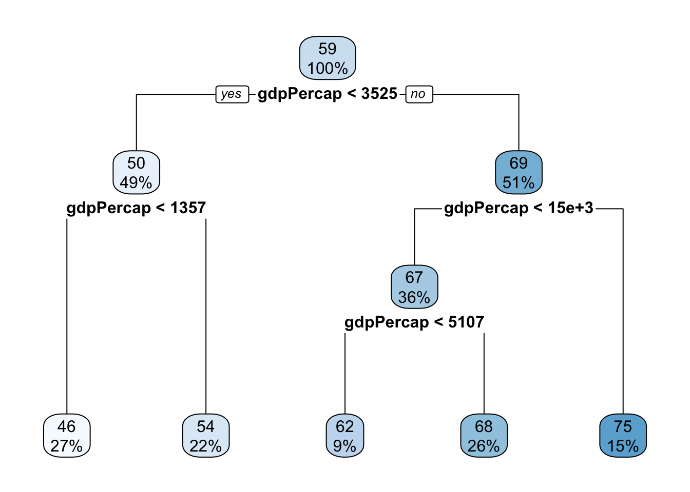
Analyze the decision tree to understand its structure and decision rules. Each internal node represents a feature and a splitting condition, while each leaf node represents a predicted life expectancy value. By following the paths from the root to the leaf nodes, you can interpret the decision rules. For example, a decision rule could be “If population is less than X and GDP per capita is greater than Y, predict the life expectancy as Z.”
Let’s look at the predictions
So based on the model figure above, we see that our model predicts life expectancy based on certain “cutoff” values of gdp per captia.
We can evaluate our model, by seing how well it predicts. I use the function predict() to get the predictions and then I use table() to see the predictions. Here we see the number of observations the model predicts in each life expectancy group.
pred_decision <- predict(decision_tree, train_data)
table(pred_decision) pred_decision
45.7328134153846 54.2696870229008 61.7387433628318 68.2749810126582
325 262 113 316
74.9423146067416
178 We can see how well the model predicts on unseen data:
pred_decision1 <- predict(decision_tree, test_data)
table(pred_decision1)pred_decision1
45.7328134153846 54.2696870229008 61.7387433628318 68.2749810126582
146 117 55 118
74.9423146067416
74 We can use the RMSE to provide an interpretable measure of the average prediction error. We can use the function made above eval_results() for this purpose. Bear in mind that this function takes tree objects. It takes first the dependent variable in the model in a single dataset (which I have to make), then it takes the predictions and then it takes the dataset.
# Getting the dependent variable
y_train <- train_data$lifeExp
# Getting the output for train
eval_results(y_train, pred_decision, train_data) RMSE Rsquare
1 7.479726 0.6707863# Getting the dependent variable from test
y_test <- test_data$lifeExp
# Getting the output for test
eval_results(y_test, pred_decision1, test_data) RMSE Rsquare
1 8.117045 0.5863682Classification preview
Now, let’s consider using a decision tree for the task of predicting the continent to which a country belongs (classification problem) – using the “gapminder” dataset.
We star by again loading in the data:
data <- gapminderWe split the dataset, same as above:
set.seed(23)
train<- createDataPartition(data$continent, p = 0.7, list = FALSE)
train_data <- gapminder[train, ]
test_data <- gapminder[-train, ]We build our model:
decision_tree2 <- rpart(continent ~ lifeExp + pop + gdpPercap, data = train_data)What we are interested in here is based on the the input variables, what continent the model predicts. Let’s see what it looks like:
rpart.plot(decision_tree2)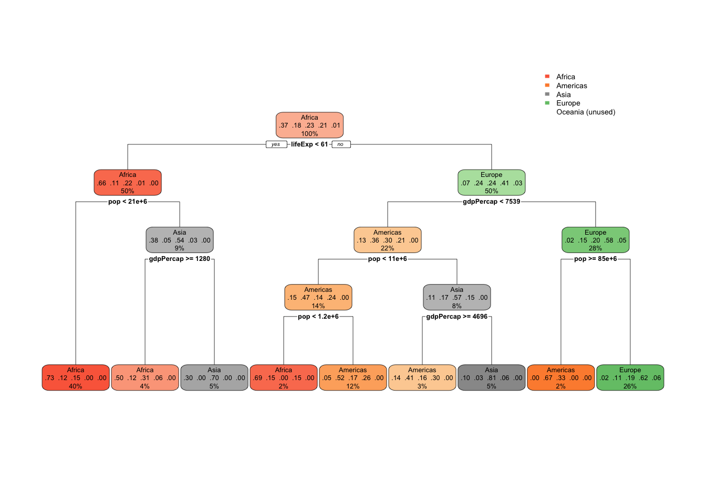
You can follow the different classifiers all the way down. This is a great and intuitive way to understand how the model functions. Based on the input, the model “predicts” continents.
Let’s look at the predictions. We use the same function as above, but here we specify type="class"
predict_tree <- predict(decision_tree2, train_data, type = "class")
table(predict_tree, train_data$continent)
predict_tree Africa Americas Asia Europe Oceania
Africa 393 68 87 9 0
Americas 12 105 38 47 0
Asia 25 2 96 4 0
Europe 7 35 57 192 17
Oceania 0 0 0 0 0In this table we see the difference between observed continents and predicted continents. We can see that our model predicted Africa correctly 393 times, however, “for 68 Africas, our model predicted Americas.” This sounds weird when I write it, but I hope you get the picture. We see how many predictions our model got right and how many it got wrong. We can do the same if we investigate how well our model predicts on new and unseen data (we just plot in the test data instead). This allows us to compare how our model performs on training and on the test data.